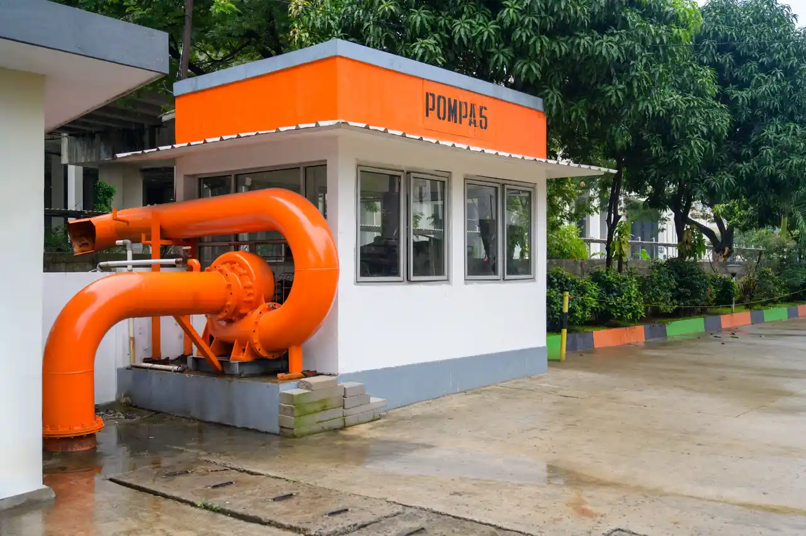

Repiping services Arlington Heights IL replace failing galvanized or corroded lines with PEX or copper built to last decades. If your 60005 or 60004 home shows rusty water, pinhole leaks, or pressure that drops when two fixtures run, we can help. Five Star Plumber LLC handles whole home repiping in Arlington Heights with clean, code-correct work and same-day estimates.
We walk you throughEvery fixture checked with you.
What Our Repiping Services Include
Every repipe we run covers the full supply system, not just the visible pipes. You get new lines, new valves, and a tested system before we close a wall. Here is what is standard on an Arlington Heights repipe.
Full supply line replacement
We remove all old galvanized or failing copper supply lines and install new PEX tubing or copper pipe from the main shut-off to every fixture. That includes hot and cold runs, plus the line feeding your water heater.
New shut-off valves
Every fixture gets a new shut-off valve so you can isolate a sink or toilet without killing water to the whole house. We use quarter-turn ball valves that stay operable for years, not gate valves that seize up.
Pressure testing
We pressure-test the new system before any drywall goes back. The gauge stays on long enough to prove there are no hidden leaks. You see the reading and the result before we close up.
Permits and inspection
When the scope requires a permit, we pull it and schedule the inspection. Our work is built to Illinois plumbing code for support spacing, protection plates, and backflow prevention, so it passes without a redo.
Wall patching and cleanup
We patch the openings we made and haul away all old pipe and debris. Floors and furniture are covered during work, and we vacuum drywall dust daily. You are not left with a construction zone.
Fixture reconnection
We reconnect every toilet, sink, shower, and appliance with new supply lines and fittings. If a fixture is too worn to reuse, we tell you before we reinstall it, not after.
Homes and businesses.
The approach is the same for a home and a business. What changes is the access, the schedule and who needs the paperwork.

For Your Home
We repipe houses of every age in Arlington Heights, from pre-war bungalows to newer builds. You get a phased schedule that keeps a bathroom and kitchen working each day.
Rusty water at the tap
Pinhole leaks in copper
Low pressure with two fixtures
For Your Business
Restaurants, salons, and offices in Arlington Heights need repipes done without closing the doors. We schedule night and weekend work and keep the water on where the business needs it.
After-hours repipe scheduling
Grease-line coordination
Multi-unit supply replacement
Repiping Services Arlington Heights IL Explained
A plain-language look at what Repiping Services involves and when it is needed.
Repiping services Arlington Heights IL is a plumbing upgrade that removes old galvanized steel or failing copper supply lines and installs new PEX tubing or copper pipe throughout the home. We cut into walls and ceilings only where needed, run new lines to every fixture, and pressure-test the system before closing anything up. A typical whole-home job takes two to five days depending on size and how many fixtures you have.
Homes in Cook County built before 1975 often still have galvanized pipes that rust from the inside out. That rust shows up as brown water, low water pressure, and pinhole leaks behind walls. If you have been searching for repiping services near me Arlington Heights IL, we can inspect your lines with a sewer camera and pressure gauge, then tell you honestly whether a repair or a full repipe makes more sense for your budget.
A repipe replaces the failing pipe run completely, so the leaks stop instead of moving down the wall.
What it is
Replacing old supply lines with new PEX or copper pipe from the main to every fixture.
When you need it
Rusty water, repeat pinhole leaks, or pressure that drops when two fixtures run.
What to expect
Two to five days, water on each evening, pressure test before walls close.
How Our Repiping Process Works
We plan the route, protect your home, and test everything before we leave. Here is what the job looks like from your side.
Inspection
We start with a walk-through of every fixture, the main shut-off valve, and the water heater. A pressure gauge and sewer camera tell us the condition of your lines and where the worst corrosion sits. You get a written scope and a same-day estimate before any work begins. This visit usually takes 45 to 90 minutes.
Walk-through
Pressure check
Written scope
Planning
We map the new runs to minimize wall and ceiling cuts. PEX tubing bends around corners, so it often needs fewer openings than copper. You choose the material after we explain the cost and lifespan difference. We schedule the work in phases so your water is off for hours, not days, at a time.
Route mapping
Material choice
Phased plan
Installation
Our plumbers cut in, remove the old pipe, and run new lines to each fixture. We use a pipe cutter, PEX crimping tool, and soldering torch where copper is specified. Floors and furniture get drop cloths and plastic sheeting. Most homes have water back on by the end of each workday, with full service restored at completion.
Old pipe out
New lines in
Daily water on
Testing
Every new line gets a pressure test before we close a single wall. We check each shut-off valve, supply line, and fixture connection for drips, then run hot and cold water at every tap. If anything reads wrong on the gauge, we fix it before the drywall goes back. You see the test results with us.
Pressure test
Fixture check
Wall close-up
Cleanup
We patch the openings we made and haul away all old pipe and debris. A final walk-through covers every fixture with you, and we show you where the new main shut-off sits. You get a summary of what was replaced and the materials used. Final payment comes after you have seen the system working.
Patch walls
Haul debris
Final walk-through
Tools and Methods We Use
Move across a circle, or focus it and press Enter, for an illustrative thermal view of the photograph.
PEX crimping tool
Creates uniform, code-approved connections on PEX tubing. We calibrate it daily so every crimp ring seats to spec.
Soldering torch
Joins copper pipe and fittings with lead-free solder. Used where copper is specified, especially near water heaters.
Pipe cutter and tube cutter
Makes square, burr-free cuts on copper and PEX. Clean cuts mean better joints and fewer leaks at the fitting.
Pressure gauge
Tests the new system before walls close. We leave it on long enough to prove there are no hidden drips.
Sewer camera
Inspects drain lines before and after a repipe. It shows us root intrusion or cracks that would otherwise go unnoticed.
Thermal views are illustrative, generated from the photographs.
Methods
Leak detection equipment
Finds hidden leaks in walls and slabs without demolition. It tells us where to open and where to leave alone.
Illinois plumbing code compliance
We build to state code for pipe support spacing, protection plates, and backflow prevention. Permits and inspections are handled as part of the job when required. Code-correct work protects your home and your resale.
Phased scheduling
We break the repipe into zones so your water is off for hours, not days. Most homes have working bathrooms and kitchen each evening. You get a day-by-day schedule before we start.
Pressure testing before close-up
No wall closes until the new system holds pressure. We document the test and walk you through the result. It is the step that prevents callbacks and hidden leaks.
Material matching
We match PEX or copper to your water chemistry, budget, and fixture layout. Copper near the water heater, PEX through long runs, and the right fittings at every transition. No mixed-metal corrosion.
When to Repipe Your Arlington Heights Home
Pre-1975 galvanized
Your pre-1975 home still has galvanized steel supply lines that rust and clog.
We inspect the full system with a pressure gauge and camera, then replace all galvanized runs with PEX or copper. We phase the work so water stays on each evening and patch every opening when done.
Outcome: Clear water, full pressure, and no more pinhole repairs. Most homeowners stop budgeting for leaks entirely.
Open-wall remodel
You are remodeling a bathroom or kitchen and the walls are already open.
This is the cheapest time to repipe. We run new lines to the remodeled fixtures and often extend the repipe to adjacent rooms while access is easy, saving a second round of wall cuts later.
Outcome: New plumbing behind new finishes, with one permit and one inspection instead of two projects.
Pre-sale inspection
You are selling and the home inspection flagged old or corroded pipes.
We repipe before listing and provide documentation of the materials and testing. The report gives buyers confidence and removes a common negotiation point from the table.
Outcome: A clean inspection report and a stronger sale position without last-minute price cuts.
Repeat leaks
You have had two or more leaks in the same pipe run within a year.
Repeat leaks mean the whole run is failing. We replace that run completely and test the rest of the system, so you are not back to patching the same wall next spring.
Outcome: The leak cycle ends. Your repair budget goes back to zero for supply lines.
Pressure drop
Your water pressure drops whenever two fixtures run at the same time.
We measure static and dynamic pressure, find the restriction, and repipe the undersized or clogged sections. New lines are sized for your actual fixture count, not the 1950s original.
Outcome: Strong pressure at every tap, even with the shower and dishwasher running together.
Old Arlington HeightsScarsdaleLake Arlington
How Repiping Works in Arlington Heights
Arlington Heights has a mix of housing stock that shapes every repipe we run. Homes near Old Arlington Heights and the Miner Street Corridor often date to the 1920s and 1950s, with galvanized steel that has been rusting for decades. Newer builds around Creekside and Lake Arlington use copper that can develop pinhole leaks from water chemistry.
Our winters drive frost deep enough to crack old pipes in exterior walls, so we route new PEX away from cold zones and insulate what stays close. Cook County requires permits and inspections on most repipes, and we handle both. If you have been searching for repiping Arlington Heights, Illinois with a crew that knows these blocks, we can walk your basement and tell you what your pipes are doing.
Old Arlington Heights: Many homes here still have original galvanized lines. We see the worst corrosion in basements and crawlspaces on these blocks.
Scarsdale: Post-war ranches with copper that is now hitting the pinhole-leak age. Repipes here are usually two to three days.
Lake Arlington: Newer construction with copper manifolds. We often repipe only the hot side and add a water softener to stop scale.
Miner Street Corridor: Older two-story homes with finished basements. We plan vertical runs carefully to limit drywall work on finished levels.
Deep winter frost in exterior walls: Old pipes in north-facing walls freeze and split. We reroute new lines inward and insulate where they must stay close to the exterior.
Hard water across Cook County: Scale builds inside copper and shortens water heater life. We recommend a softener with the repipe to protect the new system.
IllustrativeThe thermal view is generated from the photograph. It is not a measurement. Drag the handle, or use the arrow keys once it is focused.
1950s Ranch Repipe in Scarsdale
Before: A 1,100-square-foot ranch had galvanized lines with rust-colored water every morning and two pinhole leaks in 18 months. Pressure at the shower dropped to a trickle when the kitchen sink ran. The homeowner was patching walls twice a year.
After: We repiped the full house in PEX over three days, replaced every shut-off valve, and pressure-tested before closing walls. Water runs clear, and static pressure at the shower now holds at 60 psi with two fixtures running. No leaks since completion.
Run a water softener to prevent scale, and test shut-off valves twice a year. We check the system at your annual maintenance visit and replace any valve that stiffens up.
Two-Story Copper Repipe Near Lake Arlington
Before: A 2,400-square-foot home had copper lines with pinhole leaks in the hot-water side. Three repairs in two years, each one behind finished drywall. The homeowner wanted copper again but needed the leaks to stop.
After: We ran new copper to the water heater and PEX through the long runs, with new shut-off valves at all 14 fixtures. The job took five days with water on each evening. Pressure test held at 100 psi for two hours before any wall closed.
Keep the water heater flushed yearly to reduce sediment, and check the anode rod every two years. That protects the new copper from the inside.
Downtown Condo Emergency Repipe
Before: A burst pipe in a second-floor condo unit sent water into the unit below on a Sunday night. The building had original 1960s copper with thin walls. The homeowner needed the line replaced and the building needed proof of a proper fix.
After: We isolated the line within the hour, then repiped the unit's supply system in two days. New shut-off valves let the owner isolate any fixture. The pressure test and material documentation went to the building manager, and no further leaks were reported.
Know where your main shut-off is and exercise it twice a year. In a condo, keep a copy of the repipe documentation for the building file.
Problems Our Repiping Services Solve
Old pipes fail in patterns, and those patterns cost money every year you ignore them. Here is what we fix and why it matters.
Repeat pinholesPinhole leaks that keep coming backEach leak means a repair bill, a wet wall, and possible mold. Once pinholes start, they usually spread through the same pipe run within a year. We replace the entire failing run with new PEX or copper, not just the leaking section. That removes the corrosion pattern instead of chasing it. Most homes see no supply-line leaks for decades after the repipe.
Rusty waterBrown or rusty water at the tapDiscolored water signals internal pipe corrosion and can carry sediment into your water heater and appliances, shortening their life. New supply lines eliminate the rust source. We can also flush your water heater and add a filtration system if you want extra protection. Your water runs clear at every tap.
Low pressureLow water pressure throughout the houseMineral buildup narrows old pipes until showers trickle and appliances take forever to fill. It gets worse every year and cannot be fixed by cleaning aerators. A full repipe restores full-volume flow to every fixture. We size the new lines correctly for your fixture count, so two showers can run at once without pressure dropping.
Winter burstsFrozen or burst pipes in winterArlington Heights winters drive frost deep, and old pipes in exterior walls crack under expansion. A burst pipe can dump hundreds of gallons before you notice. We route new PEX lines away from cold exterior walls where possible and insulate what stays close. PEX flexes under freezing instead of splitting, which lowers your risk of a winter flood.
Why Arlington Heights Homeowners Repipe
Clear water, full pressure, and no more leak repairs.
Ends recurring leaks
Pinhole leaks in old copper and galvanized steel rarely happen alone. Once one shows up, more follow within months. New PEX tubing or copper pipe removes the whole failure pattern, so you stop patching the same wall every spring. Most homeowners see zero supply-line leaks for 20 to 50 years after a repipe.
Restores water pressure
Mineral buildup narrows old pipes until a shower feels like a trickle. After whole home repiping Arlington Heights, a 3/4-inch main feeds every fixture at full volume. You will notice it first in the shower and the kitchen sink. Two fixtures can run at once without the pressure dropping.
Cleaner, safer water
Rust and sediment from corroded pipes discolor water and can carry lead from older solder joints. New lines eliminate that source. We use lead-free fittings and can add a water filtration system at the same time if you want extra protection for drinking water. Your water heater also lasts longer without sediment clogging the tank.
Protects home value
A documented repipe is a selling point in Arlington Heights. Buyers and inspectors look at pipe material, and galvanized steel raises red flags. New PEX or copper with shut-off valves at every fixture gives you a clean inspection report and fewer negotiation headaches when you sell. It also lowers your risk of a burst pipe claim.
What you receive
Clear records you can keep and share.
Written scope
Materials, fixtures, and schedule in one page.
Pressure log
Test reading recorded before walls close.
Photo record
Before-and-after shots of each opened wall.
Material list
Pipe type and fittings used on your job.
PEX or copper: what fits your home
Both materials work. The right choice depends on your water, your budget, and where the pipe runs.
PEX tubing
Flexible plastic pipe for most supply runs.
Lower material cost
Fewer wall openings
Flexes under freezing
Copper pipe
Rigid metal pipe with a long service life.
Handles high heat
Lasts 50-plus years
Recyclable material
What we work with
Copper pipe
PEX tubing
Pipe fittings
Shut-off valves
Supply lines
Solder
Teflon tape
Pressure gauge
Service ZIP codes.
A list like this tells people straight away whether you cover their street. Not listed? Call and ask: it only takes a minute.
Our 1950s ranch had brown water every morning and two pinhole leaks in one year. Five Star Plumber LLC repiped the whole house in PEX over three days. They kept water on each evening and patched every wall they opened. Six months later, no leaks and the shower pressure is better than it has ever been.
We got three quotes for whole home repiping in Arlington Heights and theirs was the only one that explained the copper versus PEX difference without pushing. They ran copper to the water heater and PEX everywhere else. The crew covered our floors, cleaned up daily, and finished in four days. Inspection passed first try.
A pipe burst in one of our units on a Sunday night. They had a tech out within the hour, isolated the line, and scheduled the repipe for that week. The whole building was back to normal in five days with no tenant complaints. That is the response you want from a plumber.
Frequently Asked Questions
A single-story ranch with one bathroom sits near the low end; a two-story home with three baths and copper lines lands higher. We give you a written price after the inspection, so you know the number before we cut a wall.
A typical repipe takes two to five working days. A small ranch with one bathroom can finish in two days; a larger two-story home with multiple baths usually takes four to five. We phase the work so your water is back on each evening. You will know the schedule before we start, and we tell you which days water will be off and for how long.
PEX costs 30 to 40 percent less than copper, installs faster, and will not develop pinhole leaks from acidic water. Copper lasts 50-plus years and handles high heat near water heaters better. For most Arlington Heights homes, PEX is the practical choice. We install both and will tell you which fits your house, water chemistry, and budget.
No, you can stay home. We work room by room and keep at least one bathroom and the kitchen usable each day. Water is off for a few hours at a time, not the whole job. We cover furniture, contain dust, and clean up daily. If you have a newborn or a home office, tell us and we will schedule the noisiest work around your needs.
Get Your Repiping Services Arlington Heights IL Quote
One call gets you a same-day inspection, a written price, and a clear schedule. Call (224) 643-9856 and we will tell you exactly what your repipe needs.